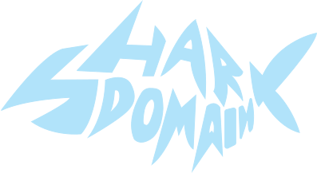
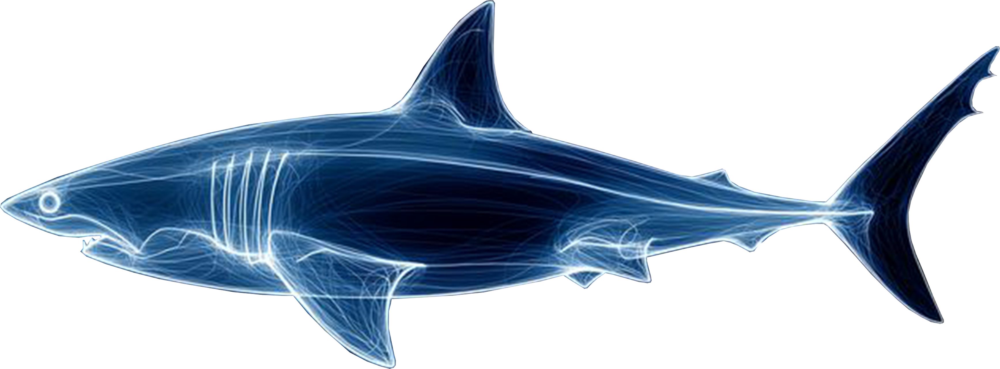
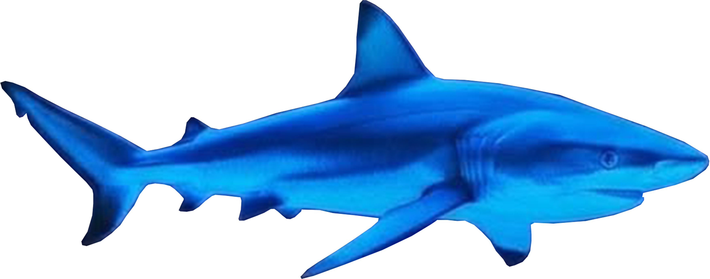

Haaien en ik
Haaien worden vaak gezien als angstjagende dieren die graag een mens op het menu hebben staan, maar zo zie ik het helemaal niet. Ik vind deze unieke dieren zo stoer maar ook heel schattig. Ik heb zelf wel eens een baby haai geaaid en weet nog precies hoe de huid voelt op mijn hand. Zij hebben een heel groffe huid, net als schuurpapier.

Deze huid dient voornamelijk voor snelheid, bescherming en camouflage! De huid bestaat uit tienduizenden microscopische tandjes die huidtanden of placoïde schubben genoemd worden. Deze bestaan letterlijk ook uit tandweefsel met tanddbeen en een harde laag glazuur.
Waarom heb ik dus gekozen om mijn onderwerp te laten gaan over haaien? Deze dieren geven mij een sterk gevoel van bewondering. Maar ik wil ook de nadruk leggen op het feit dat deze dieren een bedreigde diersoort zijn, en laten zien hoe ironisch het is dat deze "gevaarlijke dieren" degenen zijn die in gevaar zijn.
Per jaar sterven gemiddeld 10 personen aan een haaienaanval, in vergelijking tot 100 miljoen haaien die elk jaar sterven door de mens. Wie vormt dus het echte gevaar?
Haaien als bedreigde diersoort.
Hoewel haaien al 400 miljoen jaar overleefd hebben, zijn zij inderdaad een bedreigde diersoort. Dit is een probleem dat begon in de jaren 70, met de opkomst van grootschalige visserij. De dieren planten zich niet snel voort, dus de aantallen verminderen snel. Inmiddels is de haaien populatie afgenomen met ruim 70%.

Wat zijn de gevolgen?
Haaien zijn cruciaal voor de gezondheid van de oceaan. Deze roofdieren zijn aan de top van de voedselketen in het mariene ecosysteem en houden de balans. Zij voeden zich met zwakke of zieke diere en voorkomen dat het ecosysteem overbelast wordt.
Zij zorgen ook ervoor dat grazende dieren niet te lang op dezelfde plaats, vooral kwetsbare gebieden zoals zeegrasvelden alles opeten. Zeegras is heel effectief in het opslaan van C02 via fotosynthese, dit gebeurt 35 keer sneller dan een tropisch regenwoud.
Hoe kunnen wij ze beschermen?
Wij kunnen de haaien beschermen door een eind te brengen aan overbevissing, geen haaienproducten te kopen en bewustwording te verspreiden. Controleer verder of er geen dierlijke producten zitten in cosmetica / verzorgingsproducten. Je kunt ook ervoor zorgen dat jij de strand schoon achterlaat en vrij van plastic dat in de zee terecht kan komen. Als jij je houdt aan deze simpele stappen kunnen wij het samen oplossen!
Verschillende soorten
Er bestaan tussen de 400 en 500 bekende haaisoorten op aarde. Het exact aantal weten wij eigenlijk niet. Maar elk jaar wordt er nog ten minste 1 nieuwe haaisoort ontdekt!
Ga naar de Depthometer om deze haaien te verkennen op een leuke manier!
Depthometer